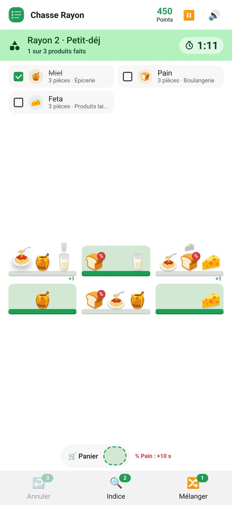

Chaque rayon a sa liste de courses. Touche un produit, puis une étagère avec une place libre. Réunis trois produits identiques sur une étagère pour la vider : la rangée de derrière avance. Coche tout sur ta liste avant la fin du temps et récupère ton ticket de caisse.
Télécharger gratuitement sur l'App Store

Télécharger gratuitement sur l'App Store
Comment jouer à Chasse Rayon : guide pas à pas
Chasse Rayon : questions fréquentes
Astuces Chasse Rayon : 9 façons de finir chaque rayon avec 3 étoiles
Chasse Rayon est-il gratuit ?
Oui. Le jeu se télécharge et se joue gratuitement. Il existe des achats intégrés facultatifs (un pack d'aides et Premium) et des publicités récompensées facultatives ; rien de tout cela n'est nécessaire pour finir les allées.
Fonctionne-t-il hors ligne ?
Oui. Tu peux jouer sans connexion internet et sans créer de compte.
Sur quels appareils ?
Sur iPhone, depuis l'App Store.
Questions ou problèmes : oguz.kamburoglu@gmail.com
Politique de confidentialité (en turc)
Türkçe · English · Deutsch · Español · Français · Português · Русский